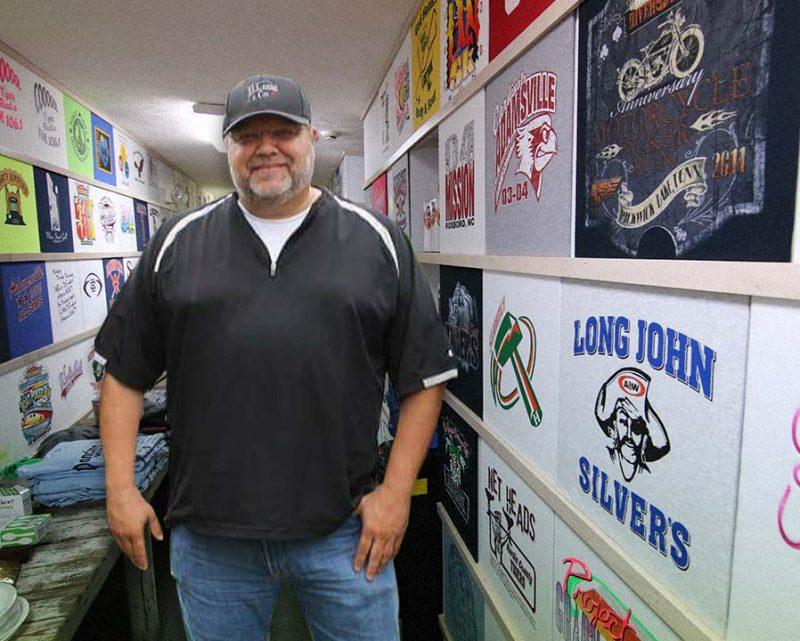

Don Long With over 30 years in the industry, Don Long set a high standard for quality, hard work, and customer service. He started out at his family business, B & J Sports, in 1975 and later opened D. Long & Company. Don loved a challenge and produced industry-leading work throughout his career. In 14 years, Don was recognized 12 times by the industry as one of the best in the country. D. Long & Company pride ourselves on continuing Don’s legacy by producing only the best work for our each and every customer. Don Long was well known in Hardin County for doing his best to help all who needed it. He was loyal to his family and his community, and committed his life to serving the town he loved with no expectation of reward. Everyone that came to know Don loved and respected him and gained a friend for life. Those who worked with him were treated like family and every customer was a priority. Don’s commitment to his work was only overshadowed by his commitment to family, friends, and the community. D. Long & Company strives to continue the dedication to excellence that started with Don. We believe in putting customer service and satisfaction above all else by creating quality products and giving each customer and project our full attention.
About